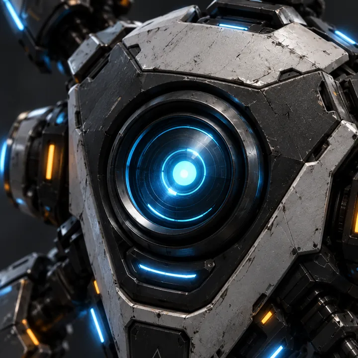

CANON / PRODUCTION CHARACTER
ROOK
Автономный air-gapped тактический дрон и бортовой ИИ Andygen. Компактный, сухой, рациональный и постепенно становящийся самым близким напарником героя.
CANONAI COMPANIONAIR-GAPPEDSCOUT / ASSIST / PROTECT~50 CM CLASS
Production concept
Этот concept sheet считаем основой дизайна ROOK. Все последующие ракурсы и детали должны сохранять его пропорции, бело-графитовую броню, cyan optics/engines и небольшие amber service lights.
Основные ракурсы
Отдельные production-рендеры для сайта, диалогов, досье и будущего 3D-моделирования.
Clean front / roster avatar base
Zoom / конструктивные детали
Эти крупные планы фиксируют материалы и ключевые узлы. Они нужны не только для красоты — это reference для 3D и будущих анимаций.

Sensor Eye
long-range vision / AI co-pilot optics
Канон дизайна
Что фиксируем
Размеркомпактный сервисно-боевой дрон, примерно 45–55 см по центральному корпусу
Корпусбело-серые бронепанели + графитовый силовой каркас, заметный полевой износ
Оптикаодин круглый центральный cyan sensor-eye; это «лицо» ROOK, но без человеческой мимики
Движениенесколько micro-thruster, точное зависание, быстрые короткие перестроения
Манипуляторыкомпактные сервисные захваты/клешни могут раскладываться из tool-port для ремонта и взаимодействия
Цветовые акцентыcyan — сенсоры/движение; amber — сервисные и механические статусы
Стабилизаторычетыре коротких стабилизатора; светлая броня и графитовый каркас
Что нельзя менять
Не превращать ROOK в милого мультяшного робота, сферу или мини-гуманоида.
Не добавлять экран с глазами/эмодзи. Характер передаётся движением корпуса, положением стабилизаторов, работой оптики и голосом.
Не делать его идеально новым: небольшие царапины и эксплуатационный износ — часть образа.
Не перегружать оружием. Его основная роль — разведка, анализ, ремонт и поддержка; combat capability вторична.
Production status: этот визуальный концепт утверждён как основа ROOK Mk I.
Роль в полёте
ROOK — физический спутник Andygen и источник тактической помощи. В обычном полёте он держится сбоку и немного позади корабля, догоняет после манёвров и может стыковаться с ним. При взаимодействии с объектом ROOK отделяется, занимает рабочую позицию и возвращается после операции. Реплики принадлежат тому же персонажу, чей корпус игрок видит рядом.
Основная специализация: разведка, проверка сигналов и считывание данных. Игрок выбирает маршрут, цель взаимодействия и момент сближения; ROOK выполняет операцию. Он не подменяет пилота и не выдаёт правильное решение до проверки. Сканирующий луч — инструмент считывания, он не наносит урон.
В обычных миссиях корпус ROOK не имеет отдельной шкалы здоровья, не перехватывает случайно снаряды и не может погибнуть раньше сценарной сцены. В миссиях защиты игрок рискует кораблём, образцами или узлами задачи. Это избавляет основную кампанию от постоянного сопровождения хрупкого NPC, сохраняя значение его тела.
Доступ к данным не равен универсальному взлому. Обычные операции используют сенсоры и изолированные локальные регистраторы. ROOK не снимает силовую защиту или глушение одним сканированием. Подключения к NOVA и чужому объекту остаются отдельными сценарными режимами. Уточнение механизма захвата в 7-5 должно сохранять принцип изоляции ROOK, а не объявлять его постоянно подключённым к SOLAR.
Операции, параметры и дальнейшие главы →
Personality & voice
Характер
Сухой, рациональный и почти буквальный. Не пытается быть смешным — юмор возникает из точности его формулировок и столкновения логики с поведением Andygen.
Постепенно его решения становятся менее утилитарными. На Uranus он делает поступок, который уже нельзя объяснить только программной эффективностью.
Голос
Ровный, мужской или нейтрально-мужской синтетический тембр. Минимальная эмоциональная модуляция. К финалу игры небольшие изменения интонации становятся заметны именно потому, что в начале их почти не было.
Ключевой принцип: никакого комедийного «роботизированного» голоса.
Story arc
MercuryФизический спутник и тактический помощник с первой миссии: считывает локальные регистраторы. Между ним и Andygen формируется привычная сухая перепалка.
VenusПроверяет выбранные игроком сигналы и отделяет ложные контакты только после анализа.
EarthПродолжает локальные операции вне корабля там, где они предусмотрены задачей. Не отключает Aegis мгновенным взломом.
MarsВыступает независимым чистым ИИ и помогает доказать, что NOVA содержит два конкурирующих процесса.
JupiterУчаствует в анализе и триангуляции вместе с Maya и станцией, сохраняя роли Navarro и Rex.
SaturnСверяет незаражённую архивную личность SOLAR с текущим заражённым процессом.
UranusПринимает чужой захват на себя, отсоединяется и уничтожает собственный корпус, спасая Andygen.
NeptuneMax восстанавливает ROOK из локального backup. Последние дни памяти потеряны; сам ROOK не помнит собственной жертвы.
{kind=link}
{kind=link}
{kind=link}
{kind=link}
{kind=link}